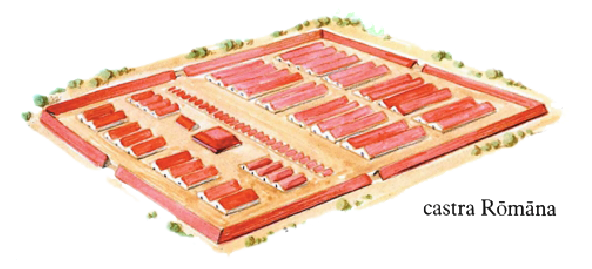

MÍLES RÓMÁNVS
I
Quīntus est frāter Mārcī. Iūlia soror eius est. Mārcus et Quīntus frātrēs Iūliae sunt. Mārcus patrem et mātrem, frātrem et sorōrem habet. Nōmen patris est ‘Iūlius’, mātris ‘Aemilia’; ‘Quīntus’ est nōmen frātris, ‘Iūlia’ sorōris.
Mārcō ūna soror est. Iūliae duo frātrēs sunt. Nōmina frātrum sunt ‘Mārcus’ et ‘Quīntus’. Patrī et mātrī ūna fīlia et duo fīliī sunt.
Mātrī ‘Aemilia’ nōmen est. Quod nōmen est patrī? Eī nōmen est ‘Lūcius Iūlius Balbus’. Virō Rōmānō tria nōmina sunt. ‘Lūcius’ est praenōmen, id est nōmen prīmum; ‘Balbus’ cognōmen est. Fīliīs nōmina sunt ‘Mārcus Iūlius Balbus’ et ‘Quīntus Iūlius Balbus’. ‘Mārcus’ et ‘Quīntus’ praenōmina sunt fīliōrum. Alia praenōmina Latīna sunt ‘Aulus’, ‘Decimus’, ‘Gāius’, ‘Pūblius’, ‘Sextus’, ‘Titus’.
Aemiliae est ūnus frāter, cui ‘Aemilius’ nōmen est (praenōmen ‘Pūblius’, cognōmen ‘Paulus’). Frāter Aemiliae est avunculus līberōrum. Aemilius autem procul ā sorōre suā abest. Itaque trīstis est Aemilia, quae frātrem suum amat.
Mārcus et Iūlia mātrem suam trīstem in hortum exīre vident et patrem interrogant: “Cūr māter nostra trīstis est?”
Iūlius: “Māter vestra trīstis est, quod Aemilius procul ab eā abest. Aemilius avunculus vester est, id est frāter mātris. Māter trīstis est, quod frātrem suum vidēre nōn potest.”
Mārcus: “Ubi est avunculus noster?”
Iūlius: “Avunculus vester est in Germāniā. Aemilius mīles est. In Germāniā multī sunt mīlitēs Rōmānī.”
Iūlia: “Quid est mīles?”
Iūlius: “Mīles est vir quī scūtum et gladium et pīlum fert. Scūtum et gladius et pīlum sunt arma mīlitis Rōmānī. Mīles est vir armātus.”
II
Iūlia: “Quid agunt mīlitēs Rōmānī in Germāniā?”
Iūlius: “Mīlitēs nostrī in Germāniā pugnant.”
Iūlia: “Meī quoque frātrēs pugnant.”
Iūlius: “Puerī pugnīs, nōn armīs pugnant. Mīlitēs pugnant gladiīs, pīlīs, hastīs.”
Mārcus: “Num Aemilius et hastam et pīlum fert?”
Iūlius: “Aemilius pīlum tantum fert, is enim pedes est, nōn eques. Eques est mīles quī ex equō pugnat; quī pedibus pugnat pedes est. Equitēs hastās, peditēs pīla ferunt. Pīlum nōn tam longum est quam hasta, neque gladius peditis tam longus est quam gladius equitis. Pīlum Aemiliī sex pedēs longum est.”
Mārcus: “Quam longus est gladius eius?”
Iūlius: “Duōs pedēs longus est.”
Mārcus: “Duōs pedēs tantum? Cūr tam brevis est gladius?”
Iūlius: “Quod gladius brevis nōn tam gravis est quam gladius longus. Gladius equitis longior et gravior est quam peditis. Pedes, quī pedibus it multaque alia arma fert, gladium longum et gravem ferre nōn potest; itaque gladius eius brevis et levis est — brevior et levior quam is quī ab equite fertur. Etiam gladiī quī ā Germānīs feruntur longiōrēs et graviōrēs sunt quam Rōmānōrum ac pīla eōrum longiōra et graviōra quam nostra sunt.”
Iūlia: “Quī sunt Germānī?”
Iūlius: “Germānī sunt hominēs barbarī quī Germāniam incolunt. Germānia est magna terra nōn procul ā Galliā; Gallia autem prōvincia Rōmāna est, ut Hispānia, Syria, Aegyptus. Prōvincia est pars imperiī Rōmānī, ut membrum pars corporis est; Rōma enim caput imperiī est, prōvinciae membra sunt. Germānia nōn est prōvincia Rōmāna. Flūmen Rhēnus Germāniam ā Galliā prōvinciā dīvidit. Rhēnus ac Dānuvius flūmina, quae Germāniam ab imperiō Rōmānō dīvidunt, fīnēs imperiī nostrī sunt. Germānia est patria Germānōrum, ut Rōma nostra patria est.”
Iūlia: “Cūr mīlitēs Rōmānī contrā Germānōs pugnant? Suntne Germānī hominēs improbī?”
Iūlius: “Mīlitēs nostrī contrā Germānōs pugnant, quod Germānī amīcī Rōmānōrum nōn sunt nec Rōmānīs pārent. Germānī hostēs Rōmānōrum sunt, ac bellum est inter Germānōs et Rōmānōs. Germānī exercitum nostrum oppugnant.”
Iūlia: “Quid est ‘exercitus’?”
Iūlius: “Exercitus est magnus numerus mīlitum quī contrā hostēs dūcitur. Quī exercitum dūcit dux exercitūs est. Dux exercituī imperat, exercitus ducī suō pāret, nam dux ab exercitū metuitur.
In Germāniā et in Britanniā sunt magnī exercitūs Rōmānī quī contrā exercitūs hostium pugnant. Mīlitēs et ducēs exercituum Rōmānōrum ab hostibus metuuntur. In Hispāniā et in Galliā nōn multī sunt mīlitēs Rōmānī, nam Hispānī et Gallī, quī eās prōvinciās incolunt, iam exercitibus nostrīs pārent. In exercitibus Rōmānīs etiam Hispānī et Gallī multī mīlitant, quī et alia arma et arcūs sagittāsque ferunt.”
III
Iūlia: “Ubi habitat Aemilius?”
Iūlius: “Aemilius in castrīs habitat mīlle passūs ā fīne imperiī. Castra sunt mīlitum oppidum.”

Mārcus: “Quam longus est passus?”
Iūlius: “Ūnus passus est quīnque pedēs, ergō mīlle passūs sunt quīnque mīlia pedum. In castrīs Aemiliī sex mīlia mīlitum habitant. Nūllae fēminae aut puerī illīc habitant, nec enim fēminae puerīque mīlitāre possunt. Circum castra fossa et vāllum longum et altum est.”
Mārcus: “Quam altum est vāllum castrōrum?”
Iūlius: “Prope decem pedēs altum est, et duo mīlia passuum longum. Quattuor portae per vāllum in castra dūcunt. Inter duās portās est via lāta, quae castra in duās partēs dīvidit; ea via centum pedēs lāta est.
In bellō portae castrōrum clauduntur. Cum exercitus Germānōrum castra oppugnat, Rōmānī castra dēfendunt: vāllum ascendunt ac pīla in Germānōs iaciunt. Illī autem nec pīla in castra iacere possunt, quod fossa nimis lāta et vāllum nimis altum est, nec vāllum ascendere, quod Rōmānī pīlīs et gladiīs vāllum dēfendunt. Hostēs castra nostra expugnāre nōn possunt.
Ecce portae aperiuntur atque equitātus noster in hostēs impetum facit. Barbarī perterritī, quī impetum equitātūs sustinēre nōn possunt, arma ad terram iaciunt atque in magnās silvās fugiunt.
Mīles Rōmānus, quī hostem armātum accurrere videt, nōn ab eō fugit, sed armīs sē dēfendit. Mīlitēs Rōmānī fortēs sunt. Mīles fortis hostem nōn metuit, sed sine metū impetum in hostem facit. Aemilius, avunculus vester, mīles fortis est.
Circum imperium Rōmānum multī sunt hostēs. Castra et oppida nostra ab hostibus oppugnantur neque expugnantur, nam mīlitēs nostrī prōvinciās ac patriam nostram ā Germānīs et ab aliīs hostibus dēfendunt.”
Mārcus: “Etiam Germānī suam patriam dēfendunt.”
Iūlius: “Sed patria nostra pulchior est quam illōrum! Atque Germānī barbarī sunt!”
Mārcus: “Nōnne fortēs sunt Germānī?”
Iūlius: “Fortēs sunt illī, sed Rōmānī fortiōrēs sunt, nec arma Germānōrum tam bona sunt quam nostra. Scūtum eōrum nimis parvum est, pīlum nimis longum et grave; nec enim pīlum tam grave procul iacī potest. Itaque pīlum nostrum breve et leve est — brevius et levius quam pīlum Germānōrum. Mīlitēs Rōmānī bene pugnant, quod pīla eōrum brevia et levia sunt, nōn longa et gravia ut Germānōrum. Patria nostra bonīs armīs dēfenditur. Nūllus hostis Rōmam expugnāre potest.”
Mārcus: “Cūr Rōmānī Germāniam nōn expugnant?”
Iūlius: “Germānia nōn sōlum armīs dēfenditur, sed etiam altīs montibus, magnīs silvīs atque lātīs et altīs flūminibus.”
* * *
GRAMMATICA LATÍNA
Dēclīnātiō quārta
‘Exercitus’ (m) dēclīnātur hōc modō (vidē exempla in versibus 80–89 huius capitulī):
Sing. Plūr.
Nom. exercit|us exercit|ūs
Acc. exercit|um exercit|ūs
Gen. exercit|ūs exercit|uum
Dat. exercit|uī exercit|ibus
Abl. exercit|ū exercit|ibus
Ut ‘exercitus’ dēclīnantur masculīna: arcus, passus, equitātus, impetus, metus, versus, cēt.; fēminīnum: manus.
Adiectīvum
[I/II] Dēclīnātiō prīma et secunda.
Mōns altus. Arbor alta. Vāllum altum.
‘Alt|us -a -um’ est adiectīvum prīmae et secundae dēclīnātiōnis. Masculīnum ‘altus’ dēclīnātur ut ‘servus’, fēminīnum ‘alta’ ut ‘fēmina’, neutrum ‘altum’ ut ‘oppidum’.
Sing. Plūr.
Masc. Fēm. Neutr. Masc. Fēm. Neutr.
Nom. alt|us alt|a alt|um alt|ī alt|ae alt|a
Acc. alt|um alt|am alt|um alt|ōs alt|ās alt|a
Gen. alt|ī alt|ae alt|ī alt|ōrum alt|ārum alt|ōrum
Dat. alt|ō alt|ae alt|ō alt|īs alt|īs alt|īs
Abl. alt|ō alt|ā alt|ō alt|īs alt|īs alt|īs
Hōc modō dēclīnantur haec adiectīva: albus, bonus, fessus, foedus, īrātus, laetus, lātus, longus, magnus, malus, meus, novus, plēnus, prīmus, sānus, tuus, cēt.; (-er -ra -rum) pulcher, aeger, niger, ruber, noster, vester, cēt.
[III] Dēclīnātiō tertia.
Gladius brevis. Via brevis. Pīlum breve.
‘Brevis -e’ est adiectīvum tertiae dēclīnātiōnis. Masculīnum et fēminīnum ‘brevis’ dēclīnātur ut ‘ovis’ (sed abl. sing. -ī), neutrum ‘breve’ ut ‘mare’.
Sing. Plūr.
Masc./Fēm. Neutr. Masc./Fēm. Neutr.
Nom. brev|is brev|e brev|ēs brev|ia
Acc. brev|em brev|e brev|ēs brev|ia
Gen. brev|is brev|ium
Dat. brev|ī brev|ibus
Abl. brev|ī brev|ibus
Hōc modō dēclīnantur haec adiectīva: brevis, fortis, gravis, levis, tenuis, trīstis, cēt.
Exempla:
Pedes fortis Rōmānus gladium brevem et levem, scūtum magnum et grave fert; eques hastam fert longam et gravem. Peditī fortī Rōmānō est gladius brevis et levis, scūtum magnum et grave; equitī hasta longa et gravis est. Pedes gladiō brevī et levī, scūtō magnō et gravī armātus est; eques hastā longā et gravī pugnat.
Peditēs fortēs Rōmānī gladiōs brevēs et levēs, scūta magna et gravia ferunt; equitēs hastās ferunt longās et gravēs. Peditibus fortibus Rōmānīs sunt gladiī brevēs et levēs, scūta magna et gravia; equitibus hastae longae et gravēs sunt. Peditēs gladiīs brevibus et levibus, scūtīs magnīs et gravibus armātī sunt; equitēs hastīs longīs et gravibus pugnant.
Comparātīvus
Hic mūrus altior est quam ille.
Hoc vāllum altius est quam illud.
‘Altior -ius’ comparātīvus est. Comparātīvus est adiectīvum dēclīnātiōnis tertiae:
Sing. Plūr.
Masc./Fēm. Neutr. Masc./Fēm. Neutr.
Nom. altior altius altiōr|ēs altiōr|a
Acc. altiōr|em altius altiōr|ēs altiōr|a
Gen. altiōr|is altiōr|um
Dat. altiōr|ī altiōr|ibus
Abl. altiōr|e altiōr|ibus
Exempla: brevior, fortior, gravior, levior, longior, pulchrior.
Gladius equitis longior et gravior est quam peditis. Eques gladium longiōrem et graviōrem fert quam pedes. Eques gladiō longiōre et graviōre pugnat.
Gladiī equitum longiōrēs et graviōrēs sunt quam peditum. Equitēs gladiīs longiōribus et graviōribus pugnant.
Pīlum brevius et levius est quam hasta. Pīla breviōra et leviōra sunt quam hastae.
Dēlia ancilla pulchrior est quam Syra. Lēander, quī ancillae pulchriōris amīcus est, ancillae pulchriōrī rosam dat. Quid pulchrius est quam rosa?
Mīlitēs Rōmānī fortiōrēs sunt quam hostēs. Dux Rōmānus mīlitibus fortiōribus imperat quam dux hostium. Ille dux mīlitum fortiōrum est.